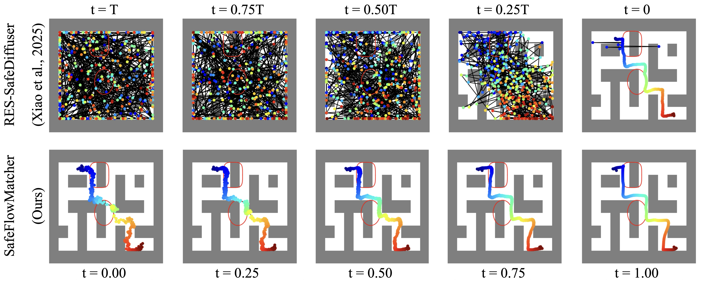
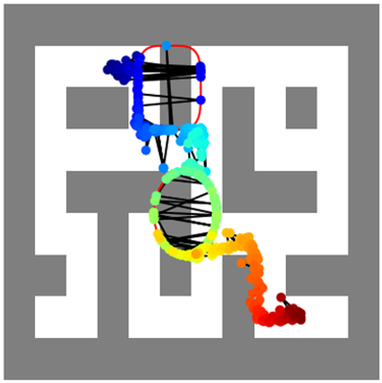
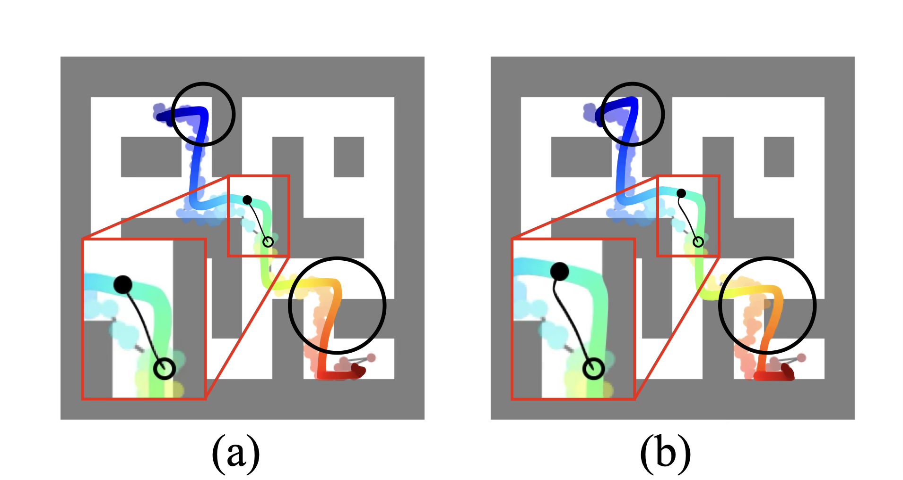
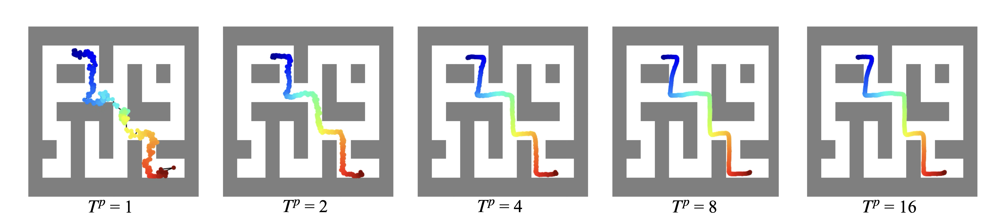
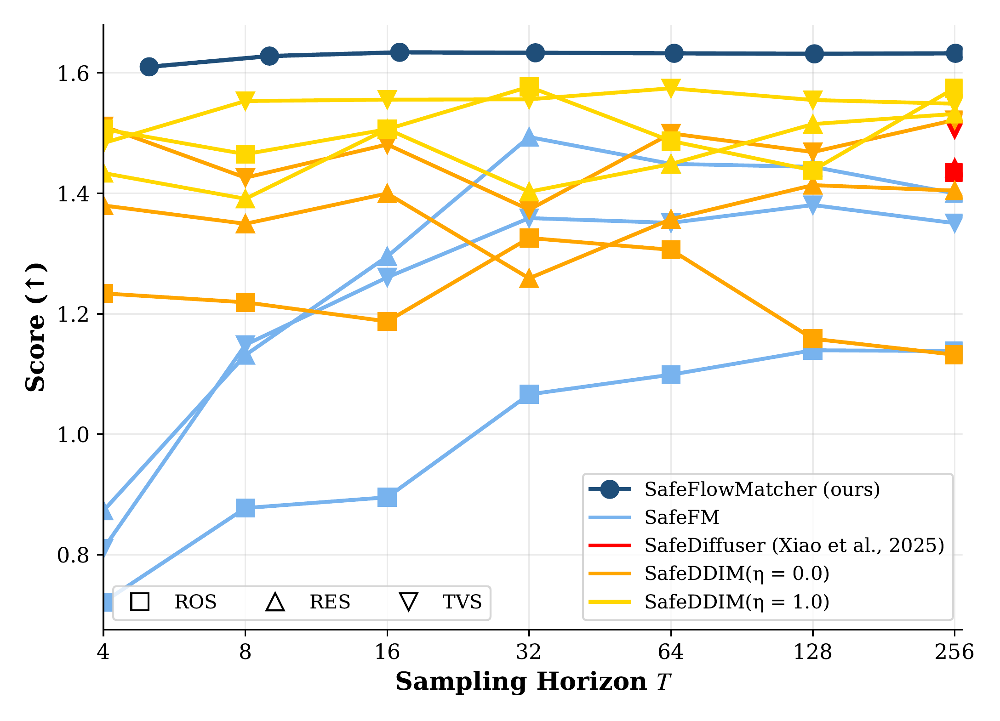
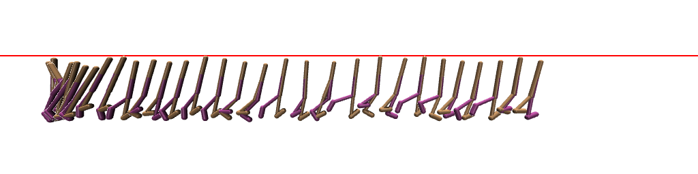
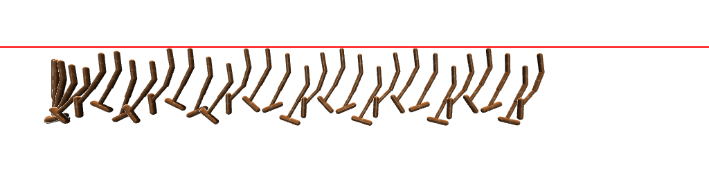
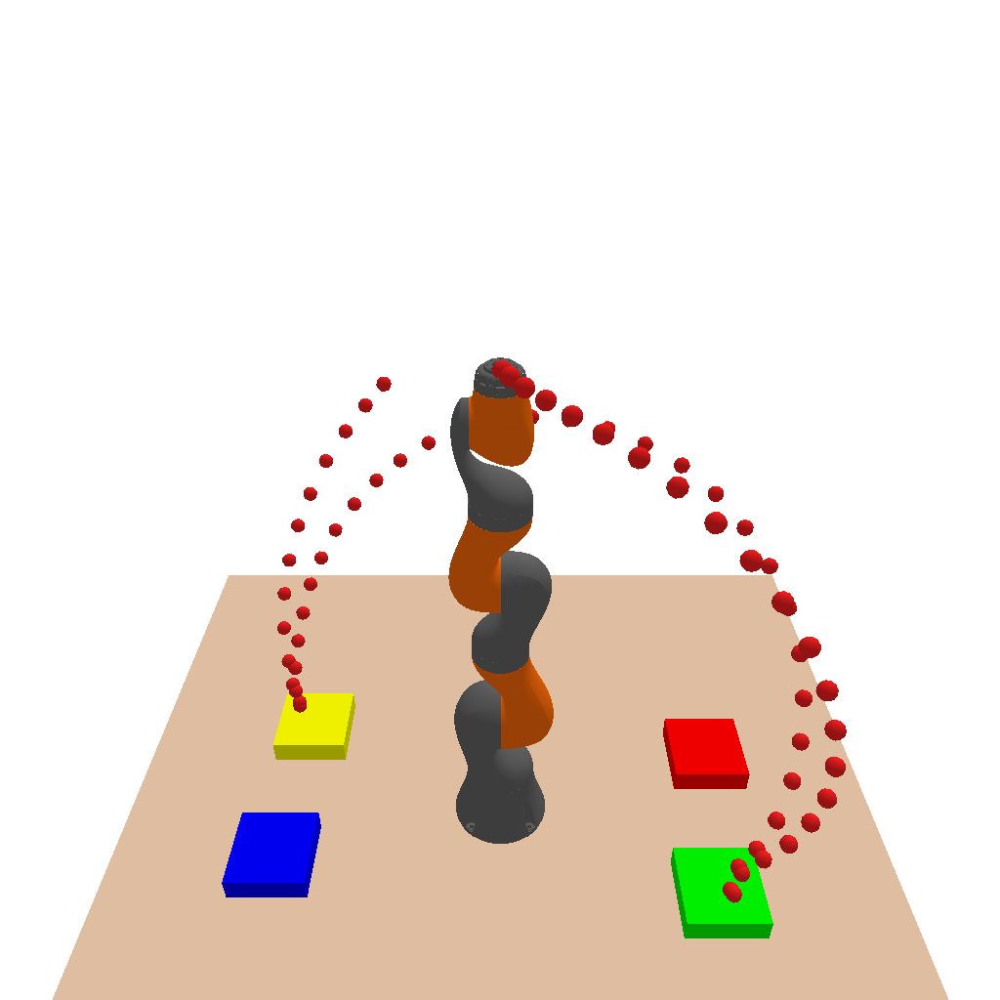

ICLR 2026
Generative planners based on flow matching (FM) produce high-quality paths in a single or a few ODE steps, but their sampling dynamics offer no formal safety guarantees and can yield incomplete paths near constraints. We present SafeFlowMatcher, a planning framework that couples FM with control barrier functions (CBFs) to achieve both real-time efficiency and certified safety.
SafeFlowMatcher uses a two-phase prediction–correction (PC) integrator: (i) a prediction phase integrates the learned FM once (or a few steps) to obtain a candidate path without intervention; (ii) a correction phase refines this path with a vanishing time-scaled vector field and a CBF-based quadratic program that minimally perturbs the vector field. We prove a barrier certificate for the resulting flow system, establishing forward invariance of a robust safe set and finite-time convergence to the safe set.
By enforcing safety only on the executed path—rather than all intermediate latent paths—SafeFlowMatcher avoids distributional drift and mitigates local trap problems. Moreover, SafeFlowMatcher attains faster, smoother, and safer paths than diffusion- and FM-based baselines on maze navigation, locomotion, and robot manipulation tasks. Extensive ablations corroborate the contributions of the PC integrator and the barrier certificate.

Comparison of path generation processes. (Top) RES-SafeDiffuser initializes samples all over the maze and converges to a path with local traps. (Bottom) SafeFlowMatcher (ours) initializes from near the target path after the prediction phase, and converges to a higher-quality path with no local traps.
Phase 1 — Prediction: Sample noise $\boldsymbol{\tau}_0^p \sim \mathcal{N}(0, I)$ and integrate the learned flow matching ODE in a single (or a few) Euler step(s) to obtain a candidate path $\boldsymbol{\tau}_1^p$, without any safety intervention. This preserves the native FM dynamics and avoids distributional drift.
Phase 2 — Correction: Starting from $\boldsymbol{\tau}_0^c = \boldsymbol{\tau}_1^p$, refine the path using vanishing time-scaled flow dynamics (VTFD) $\dot{\boldsymbol{\tau}}_t^c = \alpha(1-t) v_t(\boldsymbol{\tau}_t^c; \theta)$ combined with a CBF-based quadratic program that minimally perturbs the velocity field to guarantee forward invariance and finite-time convergence to the safe set.
| Method | BS1 (≥0) | BS2 (≥0) | Score ↑ | Time (ms) | Trap Rate ↓ |
|---|---|---|---|---|---|
| Diffuser | -0.825 | -0.784 | 1.572±0.288 | 3.70 | 0% |
| RES-SafeDiffuser | 0.010 | 0.010 | 1.442±0.451 | 4.72 | 72% |
| TVS-SafeDiffuser | -0.003 | -0.003 | 1.506±0.405 | 4.78 | 69% |
| TVS-SafeDDIM ($\eta$=1.0) | -0.026 | -0.026 | 1.549±0.304 | 4.74 | 65% |
| RES-SafeFM | 0.010 | 0.010 | 1.401±0.429 | 4.74 | 12% |
| SafeFlowMatcher (Ours) | 0.010 | 0.010 | 1.632±0.003 | 4.71 | 0% |
SafeFlowMatcher achieves the highest score with zero trap rate and guaranteed safety (BS ≥ 0), evaluated over 100 independent trials.
| Environment | Method | Score ↑ | BS (≥0) |
|---|---|---|---|
| Walker2D | SafeDiffuser | 0.321±0.119 | Yes |
| SafeFM | 0.264±0.127 | Yes | |
| SafeFlowMatcher (Ours) | 0.331±0.021 | Yes | |
| Hopper | SafeDiffuser | 0.464±0.028 | Yes |
| SafeFM | 0.675±0.312 | Yes | |
| SafeFlowMatcher (Ours) | 0.917±0.026 | Yes |
SafeFlowMatcher generalizes to high-dimensional locomotion tasks, achieving the highest score while maintaining safety guarantees.

Local trap problem. Waypoints get stuck near barrier boundaries.

Vanishing time-scale effect. (a) With VTFD: stable. (b) Without: sharp drift near $t=1$.

Predicted path quality vs $T^p$. A single-step prediction already provides a good initialization.

Score vs sampling steps. SafeFlowMatcher outperforms across all step budgets.

Walker2D

Hopper

Kuka
@inproceedings{yang2026safeflowmatcher,
title={SafeFlowMatcher: Safe and Fast Planning using Flow Matching with Control Barrier Functions},
author={Yang, Jeongyong and Jang, Seunghwan and Han, SooJean},
booktitle={International Conference on Learning Representations (ICLR)},
year={2026}
}The diffusion model implementation is based on Diffuser by Michael Janner. The safe diffusion implementation is based on SafeDiffuser by Wei Xiao.